|
|
| hard corals text index | photo index |
| Phylum Cnidaria > Class Anthozoa > Subclass Zoantharia/Hexacorallia > Order Scleractinia > Family Faviidae |
| Zebra
coral Oulastrea crispata* Family Oulastreidae updated Nov 2019
Where seen? This hard coral with a black-and-white skeleton is among the most commonly encountered of our hard corals. Even rather 'beat up' shores may have small colonies encrusting rocks and stones. This hardy coral grows in murky waters and even where it is often exposed to air at low tide. Elsewhere, the colonies are encrusting and grow only to a few centimetres. Oulastrea crispata is the only species in the genus. It was previously under Family Faviidae but is now placed in Family Oulastreidae. Features: Colonies about 10-15cm, sometimes much smaller. The colony tends to be encrusting, sometimes a small boulder-shape. Corallites small (about 0.5cm) circular rings with thick white radiating wall partitions (septa) on a black background. The background remains black even after the colony is dead, thus its common name. The polyps have many long thin tentacles and are brownish, sometimes with a greenish tinge and a bright green mouth. |
|
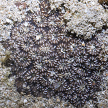 Lazarus, Apr 12 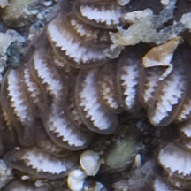 |
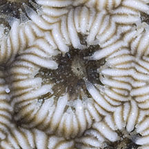 Pulau Hantu, Jan 12 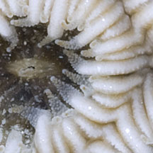 |
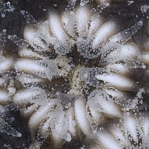 Pulau Hantu, Jan 12 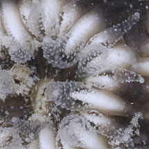 |
|
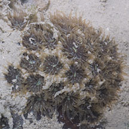 Pasir Ris, Aug 11 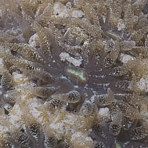 |
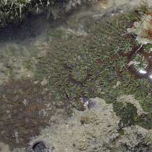 Changi, May 06 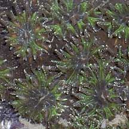 |
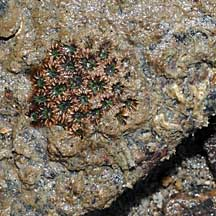 Pulau Ubin, Jun 08 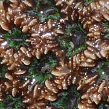 |
|
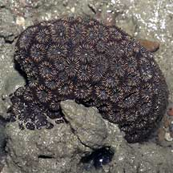 Beting Bronok, Aug 05 |
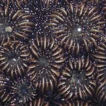 |
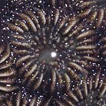 |
*Species are difficult to positively identify without close examination.
On this website, they are grouped by external features for convenience of display.
| Zebra hard corals on Singapore shores |
On wildsingapore
flickr
|
| Other sightings on Singapore shores |
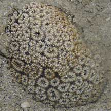 Terumbu Berkas, Jan 10 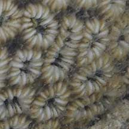 |
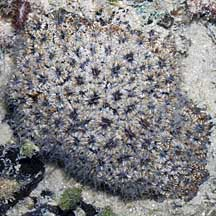 Pulau Pawai, Dec 09 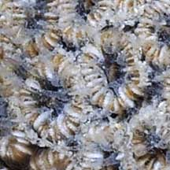 |
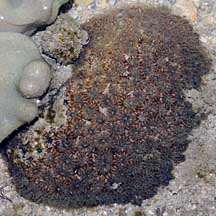 Pulau Salu, Aug 10 |
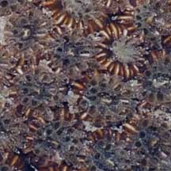 |
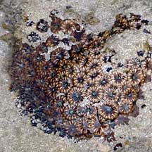 Pulau Salu, Jun 10 |
|
Links
References
|